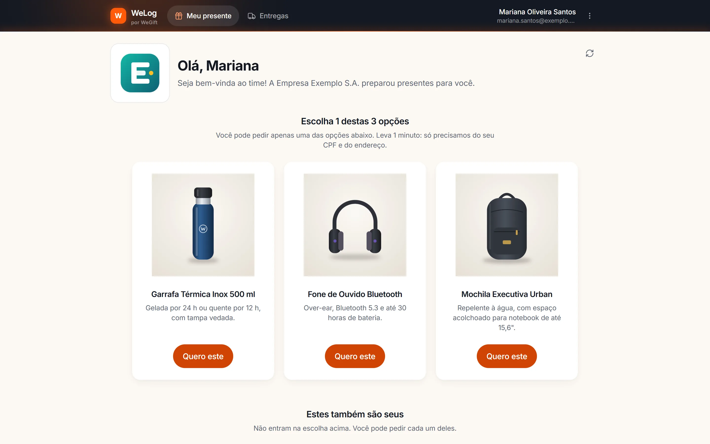
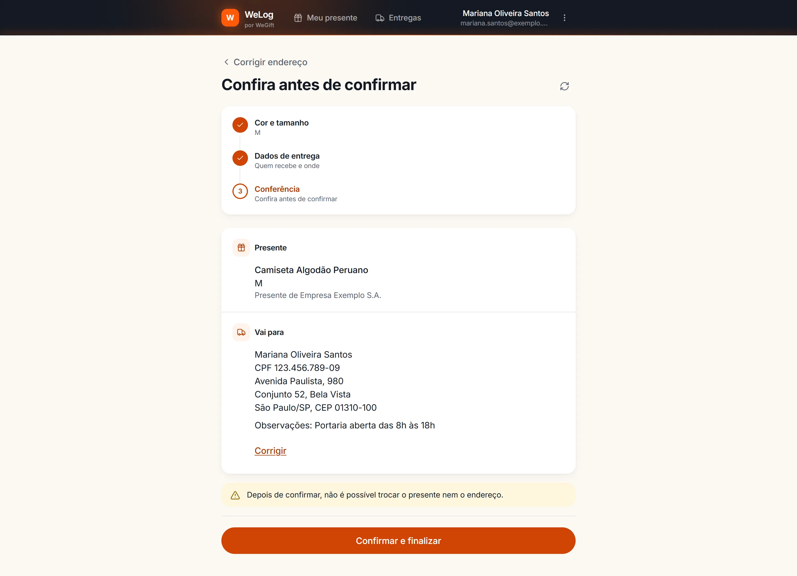
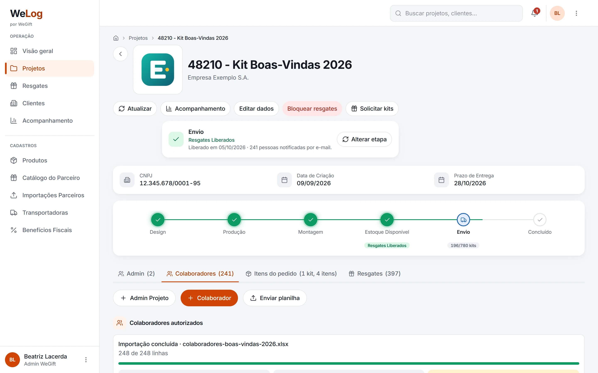
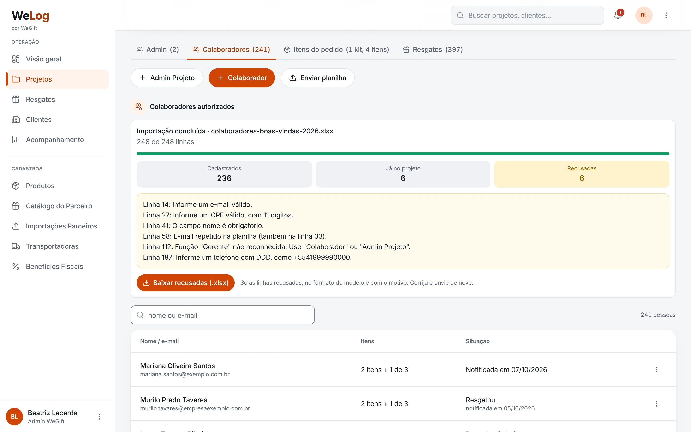
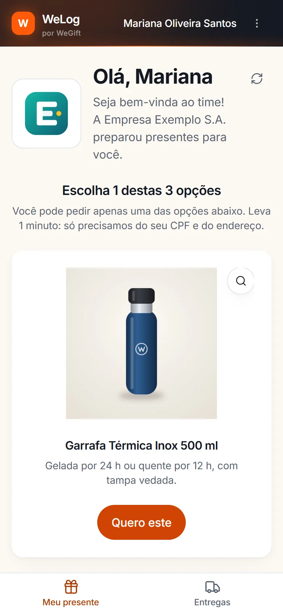

Estudo de caso 03 · Logística
WeLog
Plataforma da WeGift que leva kits de brindes corporativos do pedido no ERP até a casa de cada colaborador, com portal de resgate, importação em massa e rastreio automático.






O problema
A WeGift vende kits para empresas que precisam entregá-los a milhares de colaboradores. O processo passava por ERP, Trello e planilhas, com conferência manual em cada etapa.
Além disso, marcas parceiras mandam resgates por webhook ou por planilha, e cada um precisava virar pedido, nota fiscal e envio pela transportadora.
O que construí
- Fluxo de campanhas: o pedido no Omie vira projeto, abre card no Trello, registra o estoque num livro-razão e libera o resgate.
- Importação de colaboradores por planilha, com validação antes de gravar, explicação das linhas recusadas e convite de primeiro acesso por e-mail.
- Portal do colaborador com vitrine do kit, escolha do presente, endereço com busca de CEP e acompanhamento do envio.
- Fluxo de parceiros: resgates por webhook ou arquivo viram pedido no Omie, nota fiscal, envio em lote pela Flash e rastreio automático.
- Operação em lote (expedição, entrega, cancelamento, troca de endereço) e relatórios exportáveis.
- Administração com 5 perfis de acesso, transportadoras, mensagens de e-mail por cliente e auditoria.
Decisões técnicas
Toda integração tem uma versão falsa
Omie, Trello, Flash, Correios, Reconhece e CEP ficam atrás de contratos com duas implementações: uma que chama a API e uma falsa. O sistema inteiro sobe localmente e roda nos testes sem nenhuma credencial.
Integrações que aguentam falha
HTTP com retry e backoff só para erros transitórios, circuit breaker por API, limite de chamadas e webhooks idempotentes, para que a mesma notificação recebida duas vezes não gere dois pedidos.
Filas separadas por tipo de carga
Workers dedicados para webhooks, importações, e-mail e o restante, para que uma importação de milhares de linhas não atrase a confirmação de um webhook. 31 comandos de diagnóstico cobrem tarefas como reprocessar um webhook e revisar acessos.
Testes e CI de verdade
Cerca de 1.000 testes em 144 arquivos. O GitLab CI roda testes, build dos assets e auditoria de dependências PHP e JS antes do deploy automático.
Observabilidade respeitando a LGPD
Sentry no back-end e no front-end, com remoção de dados pessoais e release marcada pelo commit. A documentação de operação cobre capacidade para campanhas com milhares de acessos, backup, segurança e go-live.
Em números
Stack
- Laravel 13
- PHP 8.3
- Vue 3.5
- Inertia
- Tailwind 4
- Vite
- PostgreSQL
- Redis
- Sentry
- PHPUnit
- Docker
- Nginx
- GitLab CI